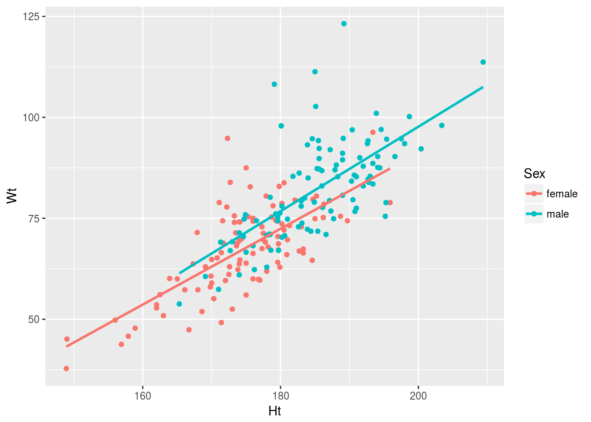
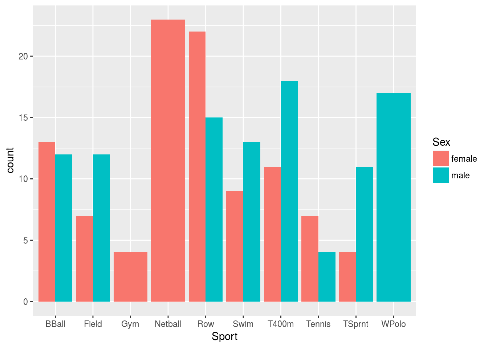
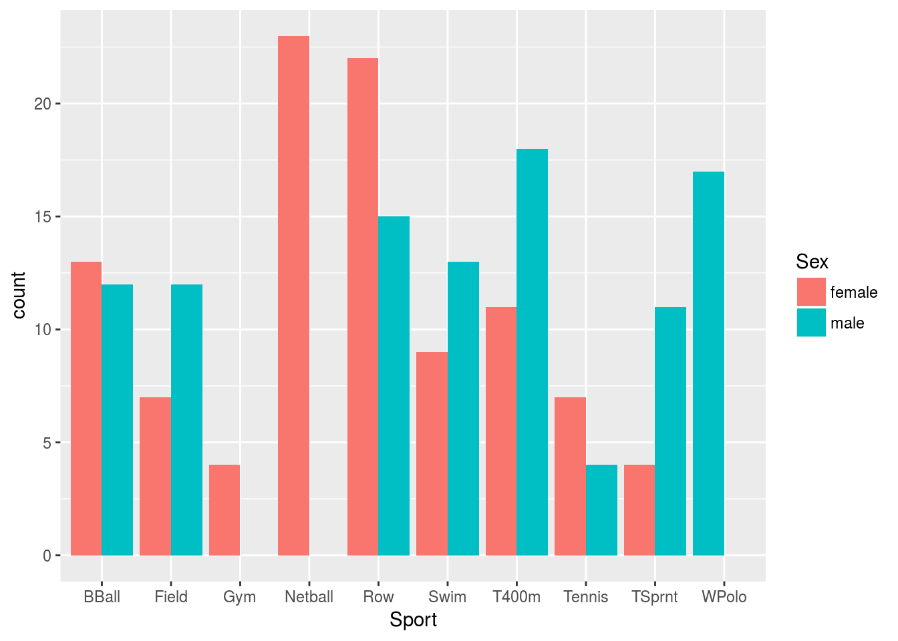

On crossing the rubicon, or how never to use expand.grid again
Packages
The usual:
library(tidyverse)## ── Attaching packages ─────────────────────────────────────────────────────────────────────────── tidyverse 1.2.1 ──## ✔ ggplot2 2.2.1.9000 ✔ purrr 0.2.4
## ✔ tibble 1.4.2 ✔ dplyr 0.7.4
## ✔ tidyr 0.7.2 ✔ stringr 1.2.0
## ✔ readr 1.1.1 ✔ forcats 0.2.0## ── Conflicts ────────────────────────────────────────────────────────────────────────────── tidyverse_conflicts() ──
## ✖ dplyr::filter() masks stats::filter()
## ✖ dplyr::lag() masks stats::lag()Introduction
Let’s use some data on Australian elite athletes, which can be found here:
athletes = read_tsv("http://www.utsc.utoronto.ca/~butler/c32/ais.txt")## Parsed with column specification:
## cols(
## Sex = col_character(),
## Sport = col_character(),
## RCC = col_double(),
## WCC = col_double(),
## Hc = col_double(),
## Hg = col_double(),
## Ferr = col_integer(),
## BMI = col_double(),
## SSF = col_double(),
## `%Bfat` = col_double(),
## LBM = col_double(),
## Ht = col_double(),
## Wt = col_double()
## )athletes## # A tibble: 202 x 13
## Sex Sport RCC WCC Hc Hg Ferr BMI SSF `%Bfat` LBM
## <chr> <chr> <dbl> <dbl> <dbl> <dbl> <int> <dbl> <dbl> <dbl> <dbl>
## 1 female Netball 4.56 13.3 42.2 13.6 20 19.2 49.0 11.3 53.1
## 2 female Netball 4.15 6.00 38.0 12.7 59 21.2 110 25.3 47.1
## 3 female Netball 4.16 7.60 37.5 12.3 22 21.4 89.0 19.4 53.4
## 4 female Netball 4.32 6.40 37.7 12.3 30 21.0 98.3 19.6 48.8
## 5 female Netball 4.06 5.80 38.7 12.8 78 21.8 122 23.1 56.0
## 6 female Netball 4.12 6.10 36.6 11.8 21 21.4 90.4 16.9 56.4
## 7 female Netball 4.17 5.00 37.4 12.7 109 21.5 107 21.3 53.1
## 8 female Netball 3.80 6.60 36.5 12.4 102 24.4 157 26.6 54.4
## 9 female Netball 3.96 5.50 36.3 12.4 71 22.6 101 17.9 56.0
## 10 female Netball 4.44 9.70 41.4 14.1 64 22.8 126 25.0 51.6
## # ... with 192 more rows, and 2 more variables: Ht <dbl>, Wt <dbl>There are 202 athletes, on whom are measured 13 variables, some categorical (such as the gender of the athlete or the sport they play), the rest quantitative (like height and weight).
Predicting weight from height and gender
To illustrate the kind of thing we might do, let’s do a regression to predict weight from height and gender:
weight.1=lm(Wt~Ht+Sex,data=athletes)
summary(weight.1)##
## Call:
## lm(formula = Wt ~ Ht + Sex, data = athletes)
##
## Residuals:
## Min 1Q Median 3Q Max
## -16.627 -5.194 -1.334 3.934 37.017
##
## Coefficients:
## Estimate Std. Error t value Pr(>|t|)
## (Intercept) -105.62300 13.10368 -8.061 6.93e-14 ***
## Ht 0.99067 0.07489 13.228 < 2e-16 ***
## Sexmale 4.37093 1.45454 3.005 0.003 **
## ---
## Signif. codes: 0 '***' 0.001 '**' 0.01 '*' 0.05 '.' 0.1 ' ' 1
##
## Residual standard error: 8.55 on 199 degrees of freedom
## Multiple R-squared: 0.6268, Adjusted R-squared: 0.623
## F-statistic: 167.1 on 2 and 199 DF, p-value: < 2.2e-16Ht and Sex are both significant; taking note of the units of measurement, being 1 centimetre taller is associated with almost exactly 1 kg more weight (regardless of gender, according to the model), and being male rather than female is associated with 4.4 kg more weight (regardless of height, but comparing a male and a female of the same height).
To understand this model better, let’s do some predictions. For this, I like to use combinations of values of the explanatory variables, which helps me understand their effect. Let’s use the median and quartiles of height and the two genders. The five-number summary of height is
quantile(athletes$Ht)## 0% 25% 50% 75% 100%
## 148.900 174.000 179.700 186.175 209.400The obvious way to do this is via expand.grid:
heights=c(174,180,186)
sexes=c("female","male")
new=expand.grid(Ht=heights,Sex=sexes)
new## Ht Sex
## 1 174 female
## 2 180 female
## 3 186 female
## 4 174 male
## 5 180 male
## 6 186 maleclass(new$Sex)## [1] "factor"This makes all combinations of the three heights and two genders all right, but even though the values in sexes were text, they have been turned into a factor. This might be all right in a regression, but in other cases it might not be, and then you would have to use the infamous stringsAsFactors to keep it as text.
Instead of that, we can use crossing from tidyr, which, like other tidyverse tools, only creates factors if you ask it to. Using the heights and sexes from above:
new=crossing(Ht=heights,Sex=sexes)
new## # A tibble: 6 x 2
## Ht Sex
## <dbl> <chr>
## 1 174 female
## 2 174 male
## 3 180 female
## 4 180 male
## 5 186 female
## 6 186 maleand now Sex is text.
There is a technicality here: expand.grid varies the first thing fastest, while crossing varies the last thing fastest.
I gave new precisely the same column names as the variables in the regression so that I could predict weight for athletes of these heights and genders:
pred=predict(weight.1,new)
new %>% bind_cols(pred_weight=pred)## # A tibble: 6 x 3
## Ht Sex pred_weight
## <dbl> <chr> <dbl>
## 1 174 female 66.8
## 2 174 male 71.1
## 3 180 female 72.7
## 4 180 male 77.1
## 5 186 female 78.6
## 6 186 male 83.0This shows predicted weight for athletes of “typical” heights and both genders. If you compare the same height but different genders, the male is predicted to be heavier by just over 4 kg, and if you increase height in steps of 6 cm (for the same gender), for example looking at the first, third and fifth rows, the predicted weight goes up by almost exactly 6 kg each time. This confirms what we saw by looking at the slopes, but I think it is much more obvious here that this is the way the relationship plays out.
In things like ordinal logistic regression, the slopes are harder to interpret. In that case, I like to do predicted probabilities for representative values of the explanatory variables, and looking at those makes it easier to see what the model is telling me.
I ought to have drawn a graph first, but I’ll draw one now:
ggplot(athletes,aes(x=Ht,y=Wt,colour=Sex))+geom_point()+geom_smooth(method="lm",se=F)
As you would expect, the males are mostly taller and heavier than the females, but the relationship between height and weight within gender is not obviously nonlinear, and the regression lines for males and females are very close to parallel (so that there is no need for an interaction term). This allows us the simple interpretation of additive effects of height and of gender on weight.
Gender and sport played
The data set includes a column showing which sport these elite athletes play. What sports are there, and which genders play them? With two categorical variables, a grouped bar chart is the way to go. To produce that in ggplot, one of the categorical variables is x and the other one is fill:
ggplot(athletes,aes(x=Sport,fill=Sex))+geom_bar(position="dodge")
The position="dodge" is to put the bars for each sport side by side, which I like better than stacked (which is the default). It is better to put the categorical variable that has fewer levels as the fill, since otherwise you get a lot of different colours to disentangle.
This chart shows that some of the sports are played by males and females in about equal numbers, some of them are played mostly by one gender, and some are played only by one gender. These bars come out double-width. I found out how to fix this at https://stackoverflow.com/questions/10326729/dont-drop-zero-count-dodged-barplot, S_BRT’s answer:
ggplot(athletes,aes(x=Sport,fill=Sex))+
geom_bar(position=position_dodge(preserve="single"))
Another way to see that some of the gender-sport combinations are empty is to count them:
athletes %>% count(Sport,Sex)## # A tibble: 17 x 3
## Sport Sex n
## <chr> <chr> <int>
## 1 BBall female 13
## 2 BBall male 12
## 3 Field female 7
## 4 Field male 12
## 5 Gym female 4
## 6 Netball female 23
## 7 Row female 22
## 8 Row male 15
## 9 Swim female 9
## 10 Swim male 13
## 11 T400m female 11
## 12 T400m male 18
## 13 Tennis female 7
## 14 Tennis male 4
## 15 TSprnt female 4
## 16 TSprnt male 11
## 17 WPolo male 17Even though there are 10 sports and two genders, so there ought to be \(2 \times 10=20\) combinations, there are only 17 rows here, because the three missing ones with zero frequencies are not shown. How can we make all 20 combinations? The key is a cousin of crossing called expand:
athletes %>% expand(Sport,Sex)## # A tibble: 20 x 2
## Sport Sex
## <chr> <chr>
## 1 BBall female
## 2 BBall male
## 3 Field female
## 4 Field male
## 5 Gym female
## 6 Gym male
## 7 Netball female
## 8 Netball male
## 9 Row female
## 10 Row male
## 11 Swim female
## 12 Swim male
## 13 T400m female
## 14 T400m male
## 15 Tennis female
## 16 Tennis male
## 17 TSprnt female
## 18 TSprnt male
## 19 WPolo female
## 20 WPolo maleThis gets all 20 combinations, regardless of whether there are any values in the data set or not.
The difference between crossing and expand is that the former makes combinations out of vectors that you supply (of the categories or values whose combinations you want), while expand makes combinations out of values already in a data frame, of which there might be repeats.
It seems more tidyverse to make a data frame of the values you want all combinations of, but each column of a data frame has to have the same number of rows, and the things you want combinations of won’t necessarily have the same number of each (as in our height and gender example above). So the natural way is to put the values in separate vectors and make a data frame of combinations using crossing.
If what you really want is only those combinations that exist in the data, you can get that using expand also:
athletes %>% expand(nesting(Sport,Sex))## # A tibble: 17 x 2
## Sport Sex
## <chr> <chr>
## 1 BBall female
## 2 BBall male
## 3 Field female
## 4 Field male
## 5 Gym female
## 6 Netball female
## 7 Row female
## 8 Row male
## 9 Swim female
## 10 Swim male
## 11 T400m female
## 12 T400m male
## 13 Tennis female
## 14 Tennis male
## 15 TSprnt female
## 16 TSprnt male
## 17 WPolo maleand once again there are only 17 rows.